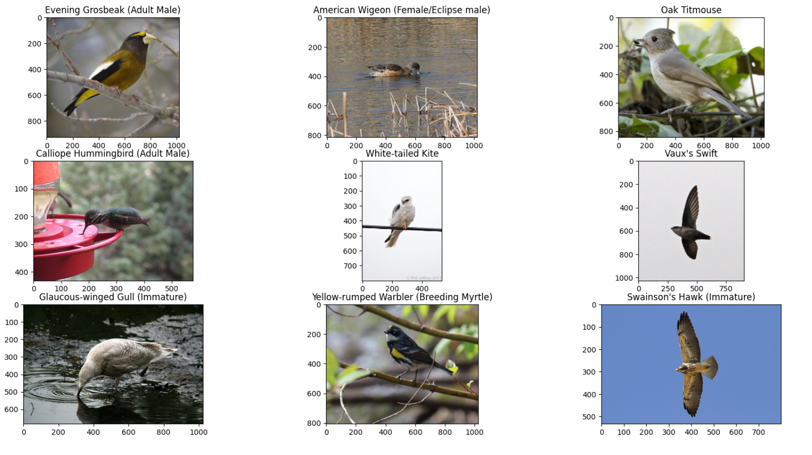
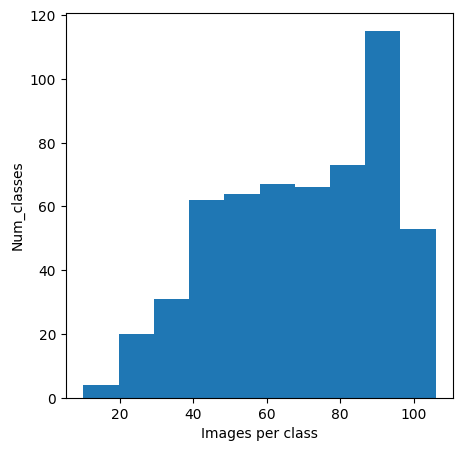
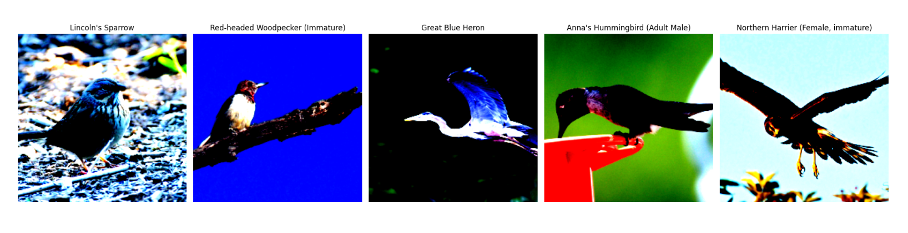
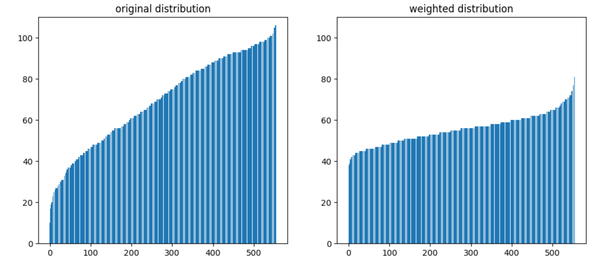

For this competition, we are required to solve an image classification task to identify bird species.
Dataset
There are 555 classes, approximately 38,000 images of varying sizes in the training set, and 10,000 in the testing set.
Below is some sample data.

This histogram of images per class is presented here.

total images: 38562
min class: Dark-eyed Junco (White-winged), num: 10
max class: White-winged Dove, num: 106
standard deviation: 22.06846640893006
Notice that the classes distribution here is uneven. The class with the most instances is ten times the class with the least instances. The standard deviation is also very big.
Balancing the data
We have explored two ways to balance the number of instances for each class.
(1) Data augmentation:
Data augmentation is a technique for artificially increasing the number of samples in the training dataset in order to prevent the model from overfitting. Transformations that are applied should maintain the data’s coherence with the distribution from which it was drawn, as extreme parameters may impede the model’s ability to learn.
In order to optimize the image loading process, we have resized all the images to 224x224 and stored them on an SSD as the new dataset.

We used Resized, Random Crop, Random Horizontal Flip, Random Affine, Random Rotation, Gaussian Blur, Random Gray Scale as transformations for train data.
And we only used Resized, Center Crop as transformations for test data.
(2) Class weights:
We realize in the train dataset, some classes only have little amount of data comparing to other classes. If we trained the model without any preprocessing, the model will have poor performance on these minority classes.
So we used Weighted Random Sampler on the train data to solve this problem, where we assign classes that have more input data with a smaller weight, and assign minority classes with higher weight.

Train / Validation / Test Set Splitting
Before we dive into the training process, we first split our dataset into two categories: training set, validation set, and test set. In this contest, we were given two folders of data. One is the ground truth dataset and one is the dataset with unknown labels. Hence, we split the first dataset into a training set and a validation set with a ratio of 8 : 2, and the second dataset automatically becomes the test set, where the accuracy is measured after we submit our prediction to the competition website. By the way, image augmentation transforms are only applied to the training set.
Training
During training, we use CrossEntropy as the loss function as the principal performance metric. We employ SGD with custom weight decay (0.0005) and momentum (0.9) as the optimizer. We use the biggest batch size possible as long as we have enough GPU memories, and we use a batch size of 64 for smaller models and 32 for bigger ones. We also make use of the learning rate scheduler and experimented with the random weight sampler. However, the random weight sampler doesn’t improve the performance, so we didn’t use it in our final pipeline.
Models and Ensemble
We have been experimenting with various CV attention models, including MaxViT, ConvNeXt, and Swin Transformer V2. For the model size, we choose the tiny version for MaxViT, the small version for ConvNeXt, and the tiny version for Swin Transformer V2. Among the three models, MaxViT performs the best, which reaches an 83.65% accuracy in the test set. Then is ConvNeXt, which reaches an 81.85% accuracy in the test set. Finally is Swin Transformer V2, which reaches an 81.55% accuracy in the test set. In our final submission, we also perform model ensemble to integrate all three models together to get a better performance. We do grid search to find the best coefficients between the three models so that they have the highest accuracy on the validation set using the coefficients. We finally choose the coefficient between MaxViT, ConvNeXt, and Swin Transformer V2 to be 0.39 : 0.26 : 0.35.
Final Result
The final pipeline achieved a score of 88% on the test set.